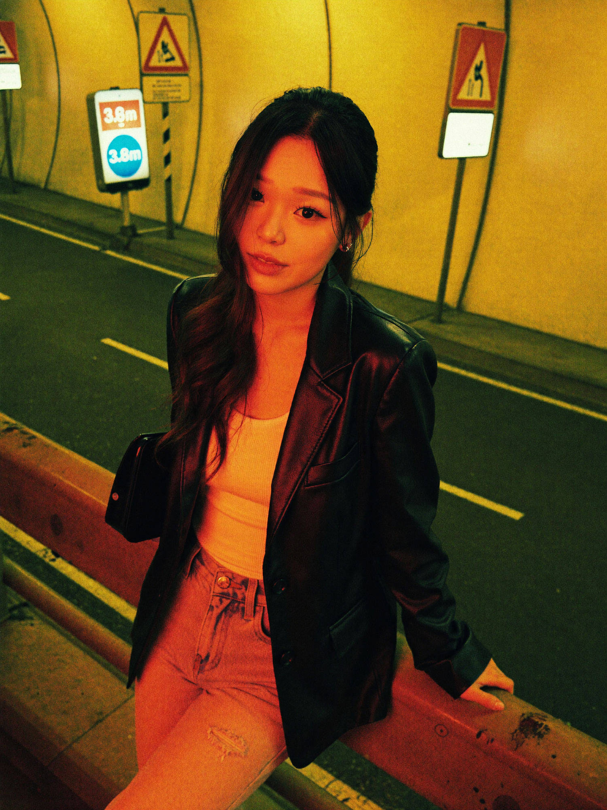
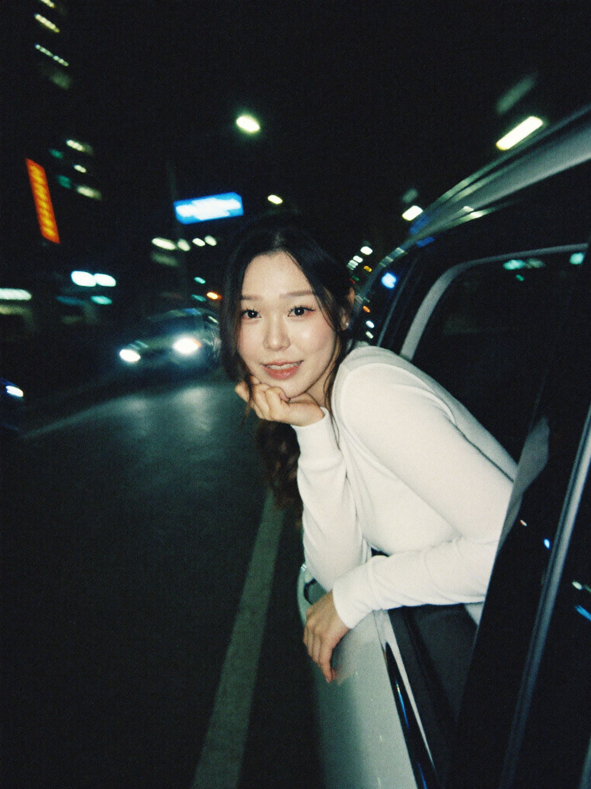
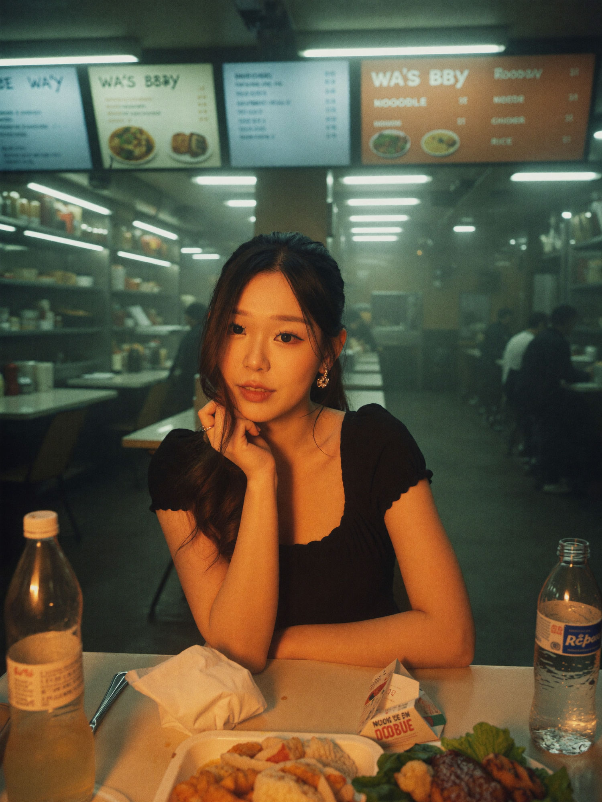

Free guides
golden hour
city lights
in motion
late night
5 Photo Realistic Portrait Prompts
Hey, it's Cindy 🌱 These are the exact prompts behind my film-grain night portraits.
btw the waitlist for AI System Club is now open! If you're keen on using AI to automate your content, video editing, job search, business or build AI agents, feel free to sign up (only if you want to hehe). Ps. the waitlist gets first dibs:)
neo-noir
Neo-noir tunnel

📋 the prompt
A slightly high-angled medium shot features an Asian woman in her early-to-mid 20s leaning against a weathered metal guardrail within an urban tunnel at night. She is dressed in a shiny oversized black leather blazer layered over a ribbed white tank top and light-washed, ripped jeans, giving her outfit a textured, street-style vibe. Her straight, shoulder-length hair partially casts shadow over her face, and her facial expression is soft, almost pensive. The background is punctuated by multiple road signs, primarily orange, white, and red, with notable text such as "3.5m", "3.8", and hazard triangles, all set against the repeating striped pattern of a tunnel entrance height limiter. The lighting is a striking mix of deep orange-red streetlamp-like illumination contrasting against patches of cold green, creating a dramatic cross-lighting effect that both enhances the contours of her face and casts rich shadows. The palette is dominated by warm, saturated orange and yellow hues contrasted with deep olives and blacks, emulating a gritty neo-noir or urban cyberpunk aesthetic. The overall effect is heightened by visible digital grain and orange color grading, likely captured with a modern digital camera and treated in post-processing for an intentionally moody, atmospheric, and slightly surreal nighttime feel.golden hour
Sunlit urban ruins
📋 the prompt
A low-angle, close-up shot captures a young Asian woman with a slightly messy bob hairstyle and glasses, dressed in a loose, fuzzy, knitted dark sweater and knee-high socks, crouching among rubble and concrete debris. The rough, textured sweater contrasts with her fair skin and the hard textures of the debris, while subtle pink makeup adds warmth to her face. The background features broken concrete slabs and exposed utility poles against a largely clear sky, embossing the scene with a raw, urban decay aesthetic. Natural sunlight casts a halo around her hair, creating a soft, ethereal glow and pronounced rim lighting, with lens flare and overexposed highlights on her skin. The dominant colors include muted browns and grays of rubble, accented by the blue sky and the rich black of her sweater. The image exhibits soft focus, a shallow depth of field, visible film grain, and vignetting, suggesting capture with a digital camera emulating vintage film through filters or overlays, evoking a dreamlike and nostalgic mood.
HEX VALUES: ["#272b25", "#31352e", "#d1cbcf", "#c2c1c6", "#37423e", "#caa995", "#abb4be", "#bb9070", "#91a0a7", "#7b898c", "#514c3d", "#445959", "#5c7174", "#6f6452", "#9e7354"]city lights
Cinematic night street
📋 the prompt
A straight-on medium shot features an Asian woman, 20 years old, standing on a city street at night, with her figure illuminated by the colorful blur of car taillights and street lamps. She wears a white collared shirt paired with a loosely tied black necktie and a textured, oversized black jacket, creating a casual yet formal contrast in her outfit. Her long, dark hair flows loosely, and she carries a patterned bag over her right shoulder. The background is an out-of-focus array of car headlights and atmospheric urban lighting, with light reflecting off the wet pavement and hints of a tall building visible. The image is punctuated by pops of saturated reds, neon blues, and whites from the car lights against a dark, ambient nighttime palette. The photograph is captured on film, showcasing a prominent graininess and muted tones, with the ambient artificial lighting producing harsh rim lights and subtle lens flare effects. The overall mood is pensive and cinematic, blending a sense of solitude with the vibrancy of city nightlife.in motion
Dreamy car window

📋 the prompt
A candid medium shot at nighttime captures a young Asian woman with straight black hair, appearing to be in her twenties, leaning out of a car window along a city street. She wears a soft white long-sleeved top with a smooth sheen, highlighted by ambient street and car lights. Her expression is warm and engaging, with one hand cradling her chin as she looks to the camera. The background gives a dynamic sense of urban nightlife, with motion-blurred streaks of blue and yellow from surrounding cars and neon signage, set against deep shadows and roughened concrete. The overall color palette is dominated by cool blues from neon city lights, contrasted by dim yellow highlights from headlights and city lamps. The image is characterized by digital grain and pronounced motion blur, especially on the left side and background, giving it a nostalgic, late 20th-century analog film aesthetic. The urban atmosphere, shallow depth of field, and intimate framing create a moody, cinematic, and dreamlike undertone.late night
Late-night food court

📋 the prompt
A hazy, atmospheric medium shot features a young Asian woman, approximately 20 years old, with straight black hair, dressed in a cinched black dress and statement gold earrings, seated at a plastic table in what appears to be a bustling, late-night eatery or food court. Her pose is poised and contemplative, with one arm resting on the table and the other casually propping up her chin, accentuating elegant jewelry and a subtle make-up look. The table before her is marked by plastic bottles, crumpled napkins, and a scattering of food wrappers, evidence of recent dining activity. In the background, fluorescent-lit shelves display food items while handwritten menu boards with partially legible text ('WA'S BBQ', 'NOODLE', and 'CHICKEN RICE') add authenticity and grit, all washed out by the soft focus and steamy glass, muting their legibility. Warm, diffuse lighting from behind the subject casts a gentle orange and yellow glow across the foreground, perfectly complementing surrounding cooler greenish-blue hues and imbuing the scene with a sultry, almost mysterious cinematic quality. The color palette is dominated by a mix of muted turquoise, deep shadows, and glowing amber highlights, captured with shallow depth of field and a soft focus effect, possibly the result of a vintage lens or digital filter, producing blurry bokeh and a dreamy, nostalgic mood.